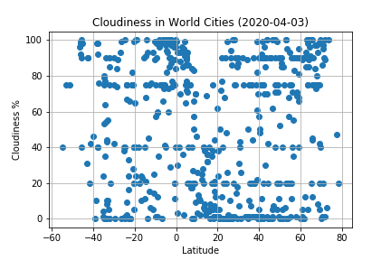

Cloudiness

The data showed a slight positive correlation between a city's latitude and its percentage of cloudiness. As a city is further north, its cloudiness increases. This trend is barely visible when simply viewing the data as a whole, and becomes somewhat more apparent when calculating hemispheric regression lines.